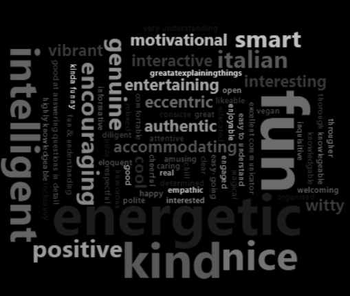
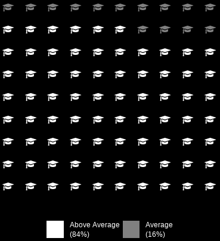

Reviews from students
LAST UPDATE: JANUARY 2026
I love teaching. I love spending time in class discussing interesting topics and having conversations with students. It's one of my favourite parts of being a young researcher. I often think about how to be a better educator, set up tutorials, and create a positive environment in the classes I teach. How can I grab and maintain students' attention (especially at 8.00 am on a Monday)? How can I explore a concept from a different perspective than the one provided in class by professors? How can I create and encourage a class environment without a strict hierarchical structure?
I have ideas and opinions that address these questions, but to determine if I am on the right track, I need to hear directly from students. I do so informally in class, having face-to-face conversations, so I can tailor tutorials on the fly independently to each class. However, people might have opinions that they do not want to share in person, so I have also been collecting reviews and feedback through an *anonymous* and *voluntary* survey, which I present at the end of each semester. I keep it short and light, knowing that no one wants to spend too much time answering questions, especially when the exam period is approaching. I use the feedback from the survey to track wider trends, ideas, and opinions, and use these to plan for the following year.
We all know that often feedback is not really used to change anything. Most of the time, it is just assessed by administrators to check if KPIs have been met. I hate that. So, in the name of transparency and self-accountability, I decided to post all the anonymous feedback here (this is clearly stated in the survey). In the page below, I try to summarise the overall reviews, and I address the points I believe are important for me to consider or reply to.

TL/DR
Students appreciated the enthusiasm, energy and environment I created in class. I put lots of effort in reducing the power gradient during class time and promoting cooperation[1]. This effort seems to have paid off throughout the years. It appears I am a morning person (indeed I am), and being energetic helped with engagement during early morning tutorials. I sometimes speak too fast when I talk about something I enjoy, but I seem to keep this trait under control.
Students' marks
I like to give students the opportunity to "sit on the other side of the desk" and have the opportunity to review my work with a grade. The first questions are a benchmark to see how I am doing compared to the other classes they take. The reason I frame the question as a comparison is not to be in competition with other educators, but it is because it is hard to provide a grade without a baseline comparison. For instance, grading an essay is an activity that does not happen in a vacuum, but it is influenced by previous grades and expectations derived from experience with similar work. I want students to think about their unique experiences and backgrounds and place my work within that context.

[1] In aviation, there is a concept known as the cockpit gradient. This refers to the hierarchy and communication flow between the captain and the first officer: if the captain exerts too much dominance, first officers may hesitate to speak up, which can lead to errors or accidents. A more balanced or shallow gradient encourages co-pilots to share their ideas, improving overall safety. I believe the same principle applies in the classroom. Reducing the class gradient helps students feel more comfortable and confident in sharing their thoughts and opinions without fear of judgment.